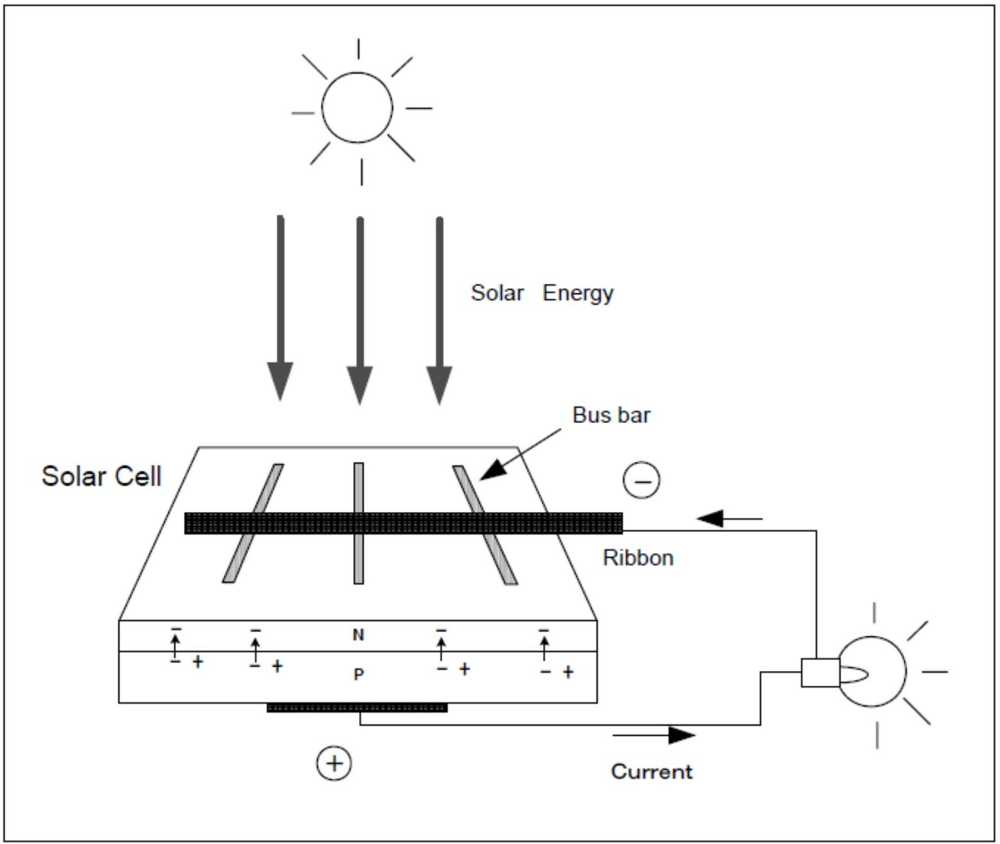
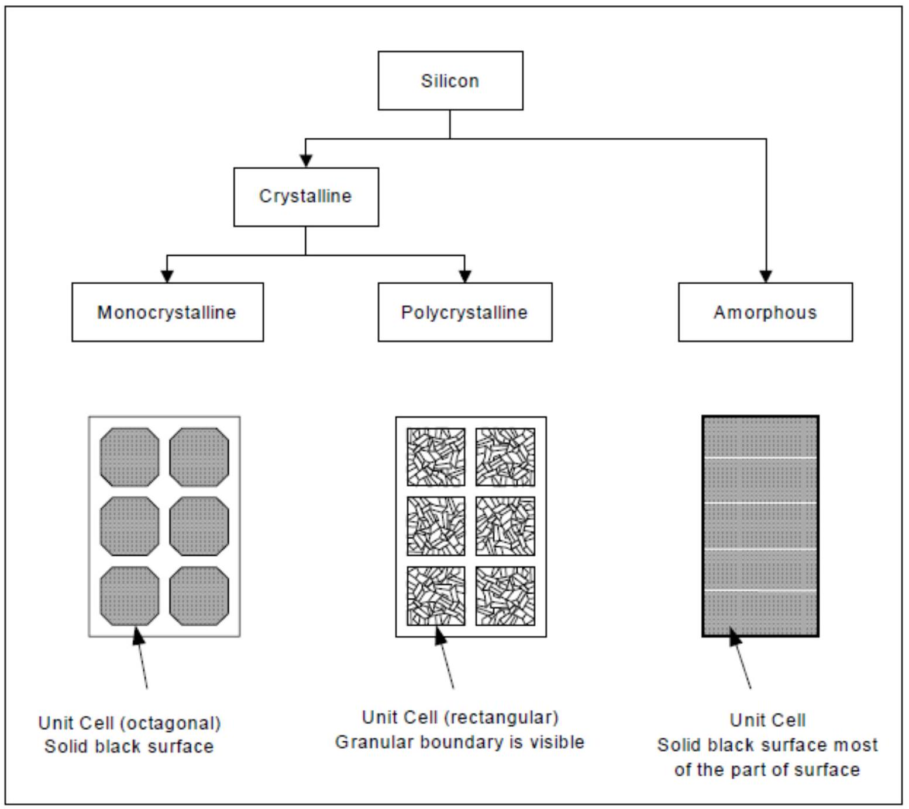
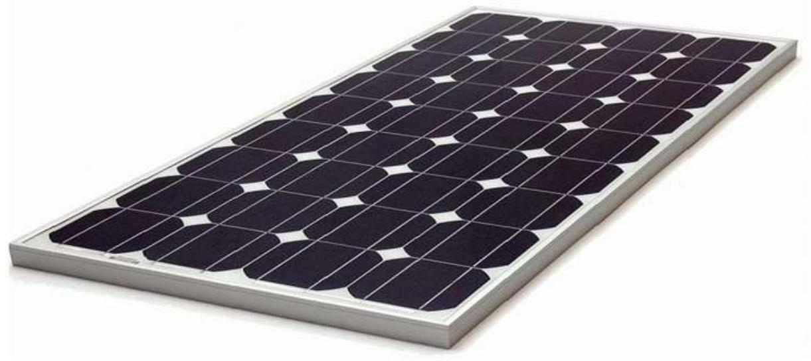
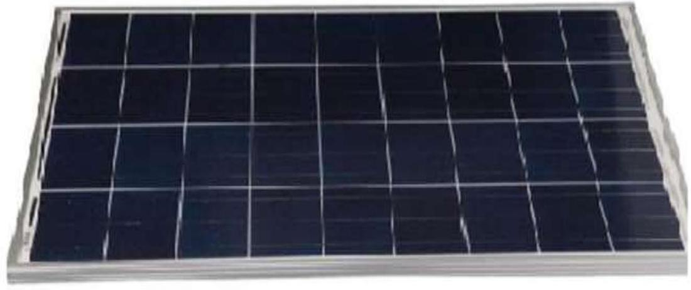

PV Modules: Introduction & Types
SOLAR PV COMPONENTS
The components of a solar pv system include: -
- Solar modules
- Batteries
- Charge controller
- Inverter
- Loads
SOLAR MODULES
A PV module converts solar energy (sunlight) into electricity. A common material for PV module is silicon semiconductor.
The photovoltaic is the direct conversion of sunlight to electricity. Light striking solar cells is converted into electric energy. This occurs according to a principle called the 'photo-electric effect'. Solar electric devices are also called photovoltaic or PV devices.
The basic unit of solar electric production is the solar cell. Light striking solar cells creates a current powered by incoming light energy. They produce electricity when placed in sunlight. Most solar cells do not get used up or damaged while generating electric power. Their life is limited only by breakage or long-term exposure to the elements. If a high-quality solar cell module is properly protected, it should last for more than 25 years.
TYPES OF PV MODULES
There are three types of silicon PV module shown below.
MONOCRYSTALLINE
Monocrystalline solar cells are made out of cylindrical silicon ingots. Four sides are cut out of the cylindrical ingots to make silicon wafers, which is what gives monocrystalline panels their characteristic look.
Advantages
- The pure silicon content of monocrystalline solar cells makes them the most efficient solar panels among all other varieties. Thus they have an efficiency quotient of between 15\%-20\%
- They are the most space-efficient. The solar cells are capable of producing four times more electricity to a quarter-space utilization for their installation.
- The solar cells exhibit better performance in low light conditions as compared to polycrystalline solar cells.
Disadvantages
- Although monocrystalline silicon cells can perform well in low light conditions, the entire circuit can break down if the panels are in full shade conditions.
- Dirt and polluted ambiance also can hamper the performance of these types of solar cells.
- The basic shape of monocrystalline silicon cells is cylindrical with round edges. Although this characteristic shape accounts for its functional effectiveness, the structure feature leads to substantial wastage of original silicon.
- Monocrystalline silicon cells are vulnerable to temperature fluctuations. They became ineffective in areas, which have low temperatures and extremely high temperatures.
POLYCRYSTALLINE SOLAR
Raw silicon is melted and poured into a square mold, which is then cooled and cut into perfectly square wafers.
Advantages
- The process used to make polycrystalline is simpler and cost-effective.
- The amount of waste silicon is less as compared to monocrystalline
- Polycrystalline solar cells have slightly lower heat tolerance than monocrystalline panels. This means they can perform in slightly worse than monocrystalline solar in high temperatures.
Disadvantages
- Because of lower silicon purity, polycrystalline solar cells are not quite as efficient as monocrystalline cells.
- Polycrystalline has lower space efficiency, a larger surface to output the same electrical power as compared to monocrystalline solar panels.
AMORPHOUS SILICON
Amorphous is the thin film of silicon so that cost is relatively low for small size such as 10 W , 20 W . However, efficiency is much lower than crystalline type as a result the physical dimensions are almost twice as big as compared to monocrystalline type. Major disadvantages are degradation of efficiency and weakness against lightning surge.
It is not recommended to use amorphous type of 25 W or bigger size since price is not different from crystalline type, and the performance is less than crystalline type